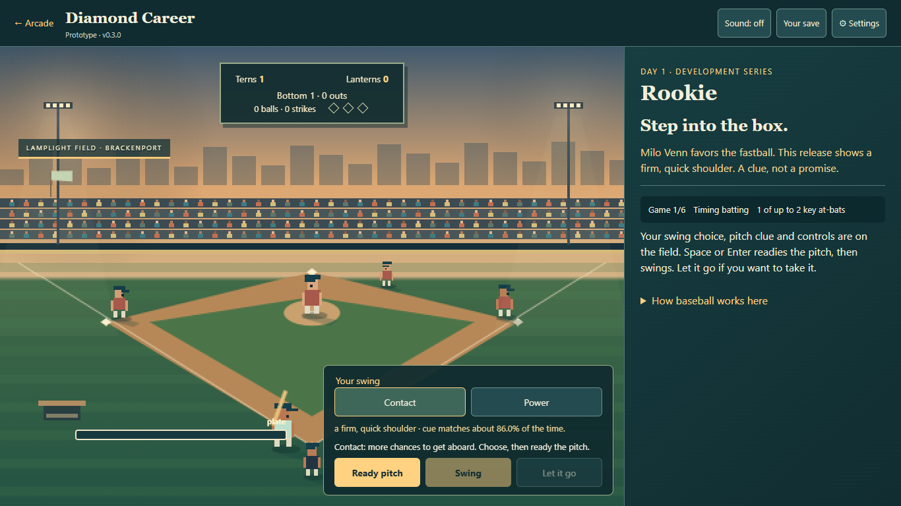

Your first six games
You are a batter beginning with the Brackenport Lanterns at Lamplight Field. Name your player and choose your look and batting hand. Coach Iona Vale introduces the development series: five hits, or a .300 on-base rate, earns the senior call-up target across six games.
You play key at-bats; the other turns and both teams simulate pitch by pitch. Your first series offers up to two playable at-bats per game. This is a batting career chapter, not a full baseball management simulation.

Timing or Tactical: choose your rhythm
Timing
- Choose Contact or Power on the field before the pitch starts. Contact favors getting aboard; Power trades some contact for extra bases.
- Read the pitcher’s release clue. It is a clue, not a promise.
- Press Throw the pitch (or Space) and watch the ball come in. Nothing covers the field while it is in the air.
- Tap anywhere on the field, or press Space, as the ball reaches the glowing circle at the plate. Do nothing to let the pitch go. Read the result and press Continue when you are ready.
Tactical
Choose Patience, Contact or Power, read the pitch and commit to your guess. Patience uses Eye to judge the zone. There is no reflex deadline in this mode. Change style in Settings; switching does not erase the count or reroll your pitch.
Four balls earn a walk; three strikes make an out. A foul cannot be strike three. Three outs switch sides. Runs score at home; games have nine innings and extras if tied. The current model has no steals, errors or double plays; runners hold on clean outs.
What helps a new batter
- Good contact can still be caught. Read the result’s explanation before treating every out as a mistimed swing.
- An off-plate pitch is harder to hit. Taking pitches is a real choice; you do not need to swing at everything.
- Train Contact, Power or Eye once per game, or Rest to clear fatigue. Training raises its stat by two, up to 80.
- Eye growth improves the reliability of release clues, but never makes them certain. Iona’s notebook records what she has explained.
- Fatigue rises after games. Rest is worth considering before deciding that your approach no longer works.
A weak first series does not erase your career. Both clubs still offer paid development places if you miss the senior target.
Two different ways to get a place
Your first offers trade money against playable chances: Copperbank’s Rotation role has a $320 signing bonus and $240 on each of three pay dates, with one key at-bat per game. Alder Quay’s Everyday role has a $180 bonus and $170 on each date, with three key at-bats. The stated term values are $1,040 and $690 respectively.
These are fictional game dollars. Pay is guaranteed by contract date, not hits. Dates advance through your choices, not a real-world clock. Read the displayed dates before signing.
After the first term: the month and your home
A 24-day renewal carries you through the first 30-day month. Games advance two calendar days; quiet days advance one. Renew with your club or choose the other role without losing your record.
The apartment costs $300 and the car $420. They stay yours, with no upkeep bill. The month recap saves your contracts, wallet, purchases and batting record. This is the end of the current playable chapter, rather than a promise of a whole league season.